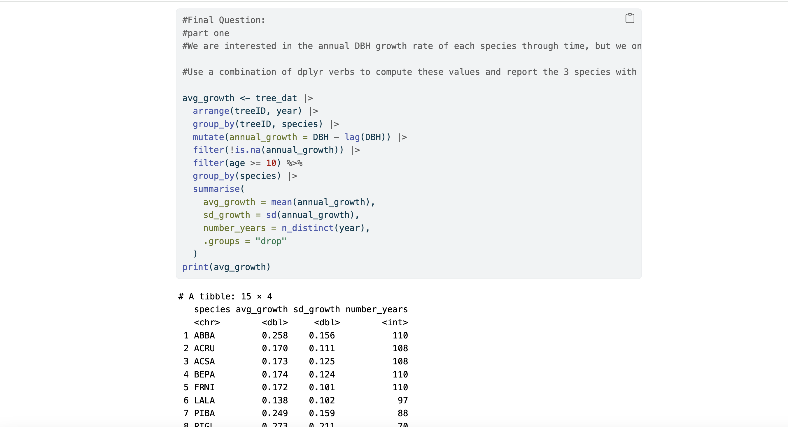
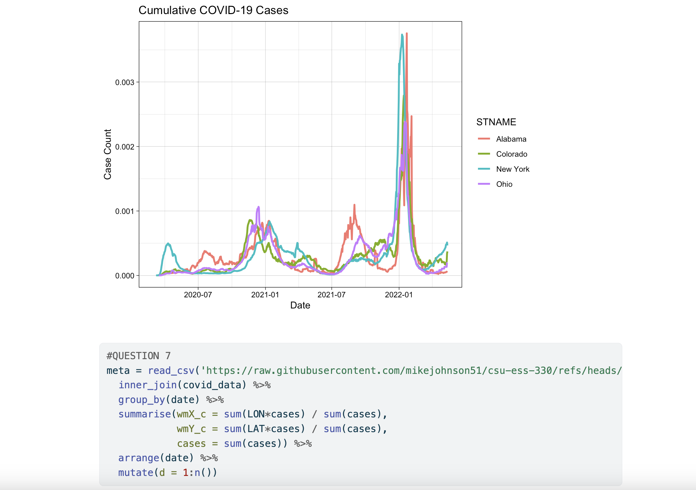
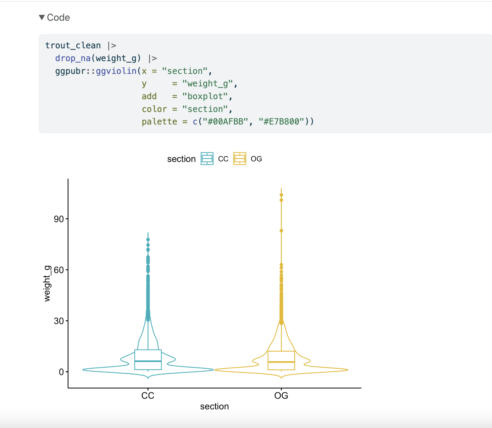
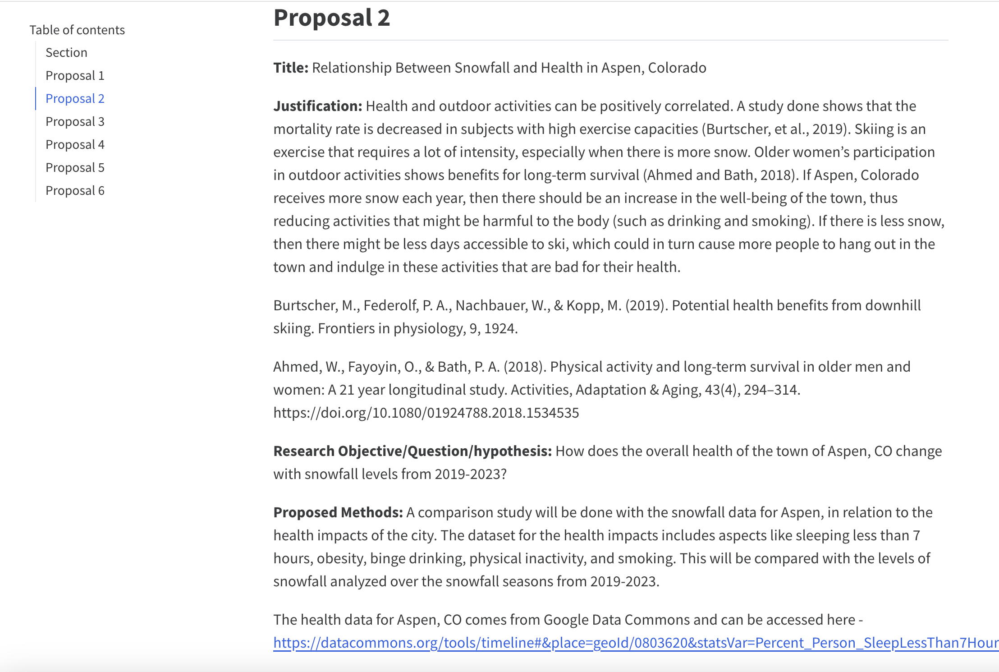
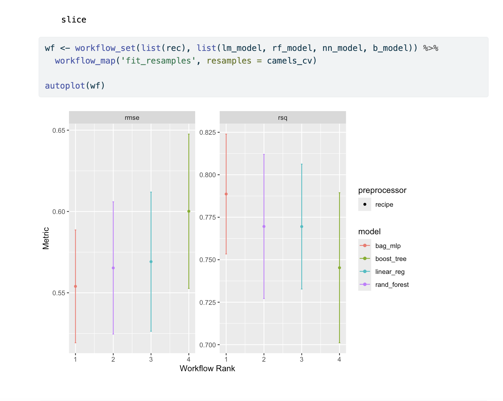
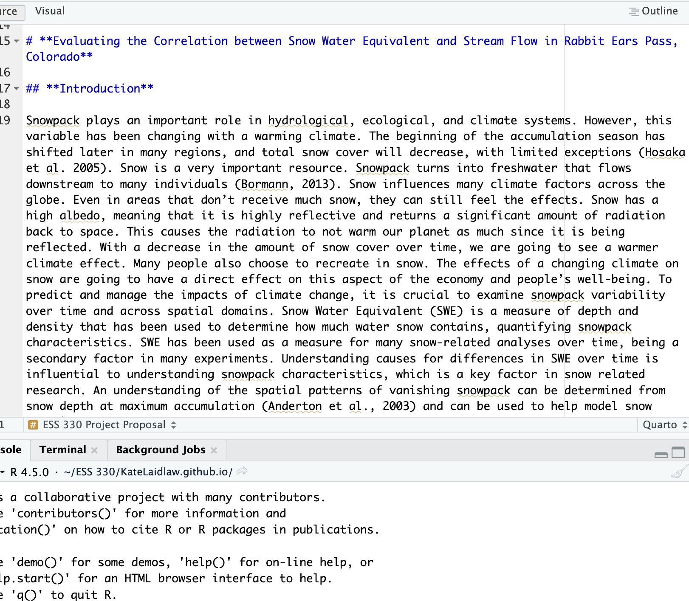
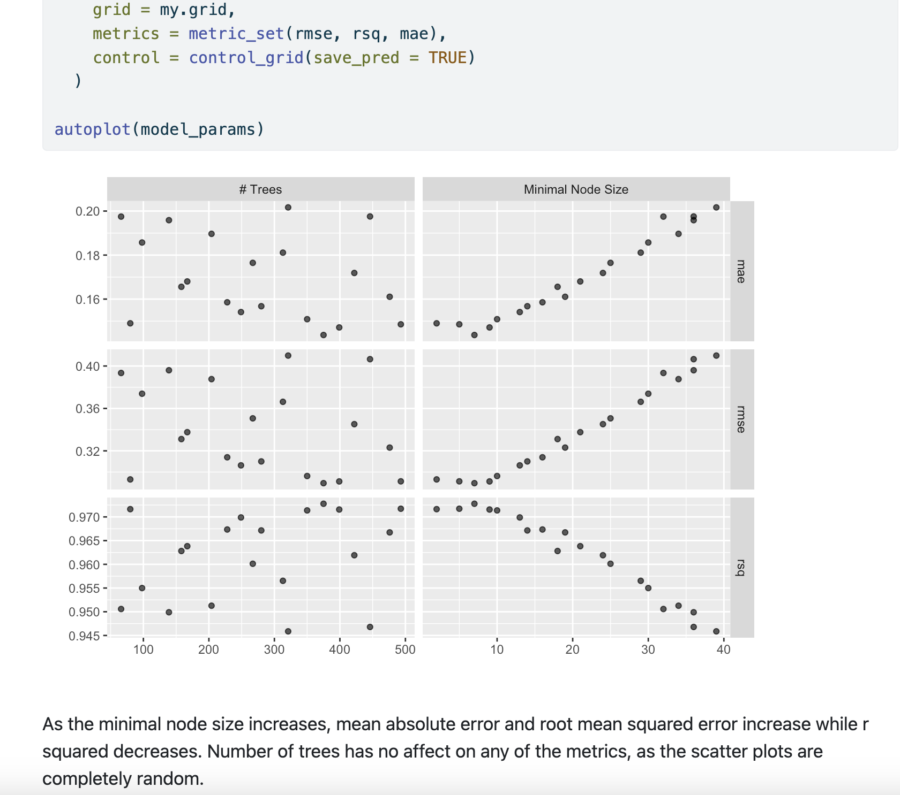
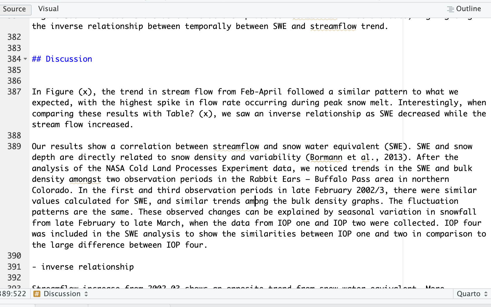
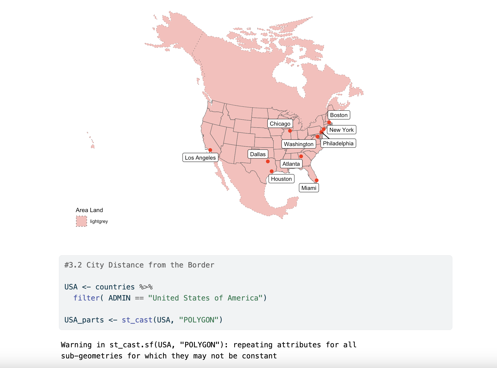
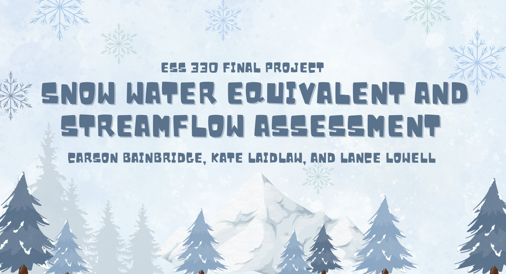

Projects
Lab 2: Minnesota Tree Growth

In this lab, I developed a strong sense of the core basic concepts in data manipulation with dplyr R. Tasks such as mutating data, filtering, grouping, un-grouping, summarizing, among other functions were performed to get a grasp of how to manipulate data, re-structure it in different formats, analyze different values in columns, rename columns, and other uses.
Lab 3: COVID Wrangling

In Lab 3, I learned how to wrangle data and clean it, and how to visualize it with packages like ggplot. I learned how to navigate and download public data, then perform functions like view the dimensions of the data, change the type of data a column is, make calculations, create flextables, different kinds of bar graphs and line plots, and maps.
Lab 4: LTER Network Data

In lab 4, I learned how to use basic statistic tests in R, performing tests including chi-square, t-tests, and correlation tests. These demonstrated different correlations of average means, distribution of different variables across an axis, normality testing, and other things. I also learned how to visualize these statistical comparisons using ggplot.
Lab 5: Project Proposals

In lab 5, I learned how to create a quarto manuscript and from this better understood how to use quarto to format a paper on a website, a step up from just a word doc. I also learned how to compile references and link them at the bottom of the paper.
Lab 6: Machine Learning Workflows in Hydrology

In Lab 6, I learned how to apply my skills in machine learning to create the best prediction model in accordance to the CAMELS data set. This lab taught me how to split data into training and testing groups, set seed, make a recipe in which to bake the data, fit the data to different models, then create a workflow to determine which model produced the best results with the data. This was one of my favorite labs. I feel like I understood it the best and it felt the most important for whatever future work I may use R for.
Lab 7: Project Kickoff

In this lab, my group and I wrote the introduction and methods portion of our final project. This gave me further experience in understanding in how to work a quarto manuscript, and taught me how to work together with others to begin the writing process of a final research paper, particularly emphasizing effective group communication, since only one person could type in the quarto manuscript.
Lab 8: Machine Learning Hyperparameter Tuning

This lab built off of lab 6 in developing my machine learning model skills. In this lab, I learned how how to split the CAMELS data into training / testing, perform feature engineering to make a recipe for the data, perform cross validation tests and understand re-sampling methods to test the different models, and plot the different model performances from a workflow to visualize what the best model were. Most importantly, I learned how to build off of these steps to tune the hyper-parameters and different metrics according to the model, check the skill of my model, and then fit the data accordingly to the model.
Lab 9: Results and Discussion

In this lab, my group and I drafted the results and discussion sections of our final research report. This gave me really good experience writing about quantitative data, and I feel that I have gotten better at transcribing a numerical result or visual into words in the results section. I also think writing the discussion gave me a good understanding of how to expand on these results and connect them back to the bigger picture/ main research question and it’s implications.
Lab 10: Distance to the Border

In this lab, I learned how to download, clean, and apply spatial data to an AOI (Area Of Interest). The lab taught me how to include spatial data into a ggplot to visualize it, and taught me how to convert data into spatial data in order to regard different datasets using spatial data functions. It also taught me how to make distance calculations and coordinate transformations.
Lab 11: Lightning Talks

In the last lab, I got a lot of good experience with public speaking, and learned how to abbreviate the large amounts of information from a research project into a short, bite-sized power point to present to the class. It also taught me what parts of the project might not be very easy to understand by presenting it to others outside of our group who have not had previous experience with the content.